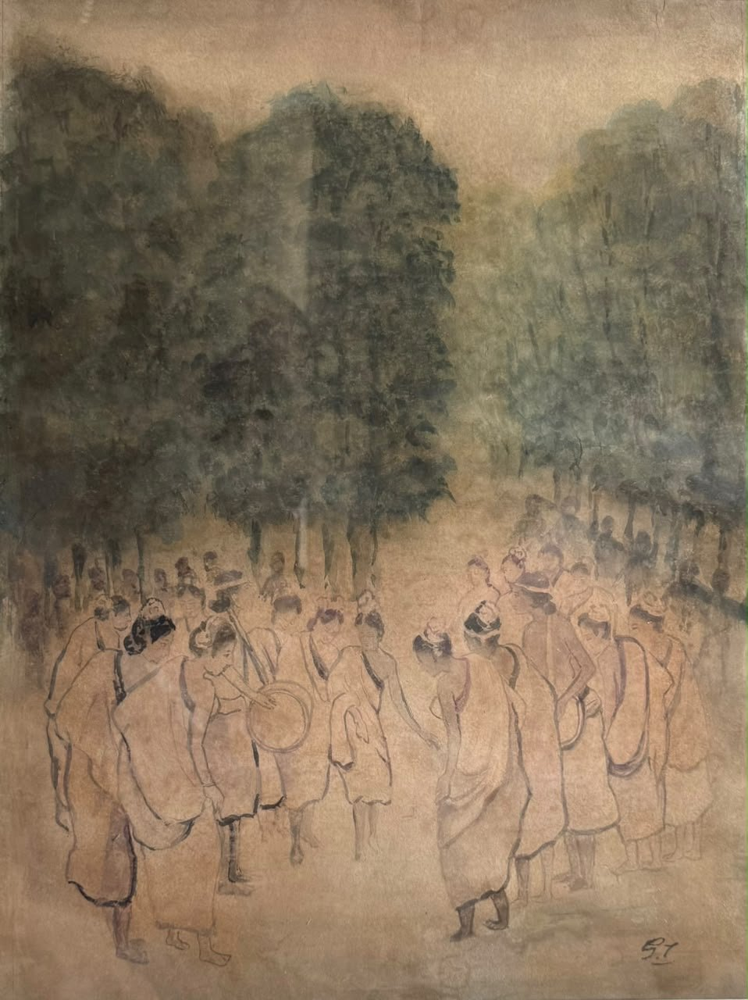
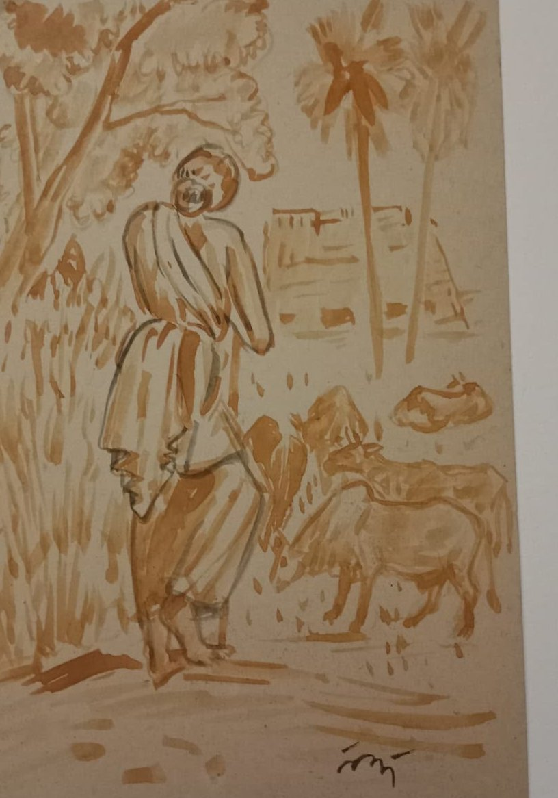
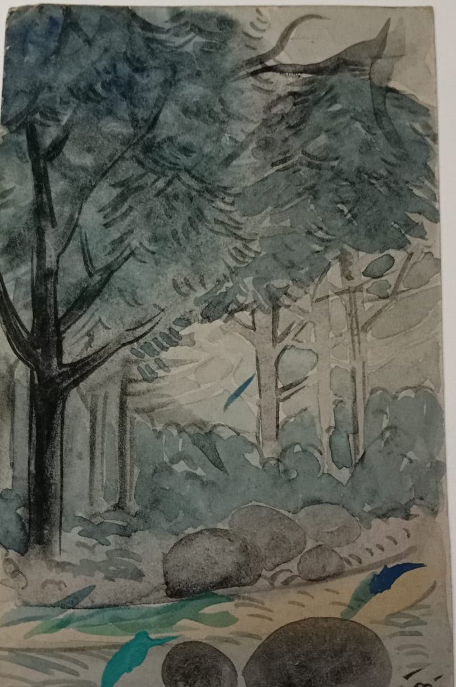
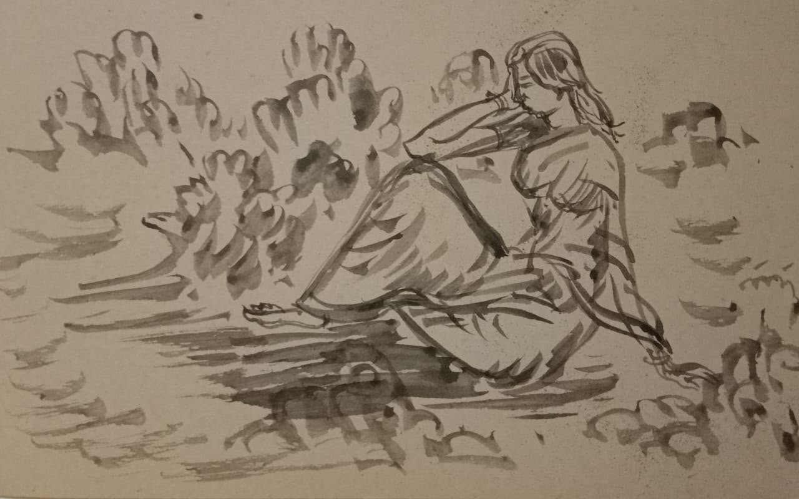

The story · 1905 to today
A turn toward home
How a handful of painters in Calcutta, and then a school under the trees at Santiniketan, taught Indian art to look at its own world again. Read it in five chapters, or follow the dates.
Prologue · 1896 to 1915
Calcutta, and a quiet figure in saffron
Bengal at the start of the twentieth century: an art school teaching European academic painting, a partition that set the province alight, and one painter who decided to look elsewhere.
E. B. Havell takes charge of the Government School of Art in Calcutta. He begins to steer its students away from copying European plaster casts and toward India's own painting traditions.
The year Bengal is partitioned, Abanindranath Tagore paints a young woman in a saffron robe, four-armed and calm, holding cloth, a sheaf of rice, a manuscript and a rosary.
She comes to be known as Bharat Mata. Painted in a soft wash that owed something to Mughal miniatures and something to the Japanese painters then visiting Calcutta, she showed a generation that modern Indian painting did not have to look European.

Bharat Mata, 1905
Watercolour on paper · [collection and credit]
Abanindranath and his elder brother Gaganendranath help found the Indian Society of Oriental Art. Gaganendranath goes his own way inside it: sharp caricatures of Calcutta society, and later, paintings of light and shadow that borrow the broken planes of cubism.
Two of Abanindranath's students, Nandalal Bose and Asit Kumar Haldar, travel to the caves of Ajanta to help copy the ancient murals. Nandalal comes back with a lesson he would teach for the rest of his life: a wall can hold a whole world.
Chapter one · 1901 to 1921
The school under the trees

Rabindranath Tagore opens a small school at Santiniketan, on land his father had set aside for quiet thought. Classes are held outdoors, under the trees.
Rabindranath receives the Nobel Prize in Literature. The money and the attention help him dream of something larger than a school.
Kala Bhavana, the art school, begins. Rabindranath wants art taught as part of life, not as a separate trade.
Visva-Bharati is founded. Its motto, taken from an old Sanskrit verse, calls it the place where the world makes its home in a single nest.
Walk through SantiniketanChapter two · 1922 to 1951
Nandalal's Kala Bhavana
For thirty years, Nandalal Bose shaped how Santiniketan learned to see: draw from life, learn from the craftsman, paint for the whole community.
Nandalal takes charge of Kala Bhavana. Students sketch the trees, the animals and the Santhal villages around the campus, and learn alpana, weaving and leatherwork beside painting.
As Gandhi sets out on the march to Dandi, Nandalal cuts a linocut of him walking with his staff. It becomes one of the best known images of the freedom movement.

Bapuji, 1930
Linocut · [collection and credit]
For the Congress session at Haripura, Gandhi asks Nandalal to decorate the grounds. He and his students make dozens of painted panels of village life: potters, drummers, mothers, farmers.
Kala Bhavana's students now include K. G. Subramanyan and, briefly, a young Satyajit Ray. The teaching travels with them for decades.
Nandalal and his students illuminate the pages of the original Constitution of India.
Nandalal retires from Kala Bhavana, though he keeps painting and teaching at Santiniketan until his death in 1966.
Meet Nandalal BoseChapter three · 1925 to 1980
Art in the open air
The generation Nandalal taught took the work out of the studio: onto walls, into the fields, and into the poet's own late paintings.

Santhal Family, 1938
Cement and laterite, Santiniketan · [photograph credit]
Ramkinkar Baij arrives at Santiniketan from Bankura. He will make the campus his gallery.
Rabindranath, who began painting in his sixties, shows his pictures in Paris. Dark, strange, and nothing like the Bengal School, they surprise everyone, perhaps him most of all.
Ramkinkar finishes Santhal Family: a Santhal man, woman and child walking, life size, made from cement and laterite pebbles and set in the open. In 1956 he follows it with Mill Call.
Benode Behari Mukherjee paints the medieval saints of India across the walls of Hindi Bhavana. After an operation in 1957 he loses his sight, and keeps making art.
Ramendranath Chakravorty, Kala Bhavana's printmaker, becomes principal of the Government School of Art in Calcutta: the school where the whole story began.
Chapter four · Present
The works today
Most of what these artists made is now in museums, in Santiniketan's own archives, or with families who have kept it for generations.
In 1976 India named the work of nine artists national art treasures. Four of them belong to this story: Rabindranath, Abanindranath and Gaganendranath Tagore, and Nandalal Bose. Their work cannot leave the country.

[Title], [year]
[Medium] / [size]

[Title], [year]
[Medium] / [size]

[Title], [year]
[Medium] / [size]
Chapter five · Future
What comes next
Santiniketan's lessons were never meant to stay in a museum. We want to keep them moving.
UNESCO inscribes Santiniketan as a World Heritage Site: the campus, its buildings, its murals and its sculptures in the open air.
On 1 December, House of Legends opens in South Delhi: a house where you can stand in front of these works, hear their stories, and ask about them.
Talks with artists, scholars and the families who kept the works. Slow walks through the rooms. An archive of letters, photographs and records, gathered with care and shared openly.
The next chapter is the one we write with you. If you know this story, own a piece of it, or simply want to see it, we would love to hear from you.